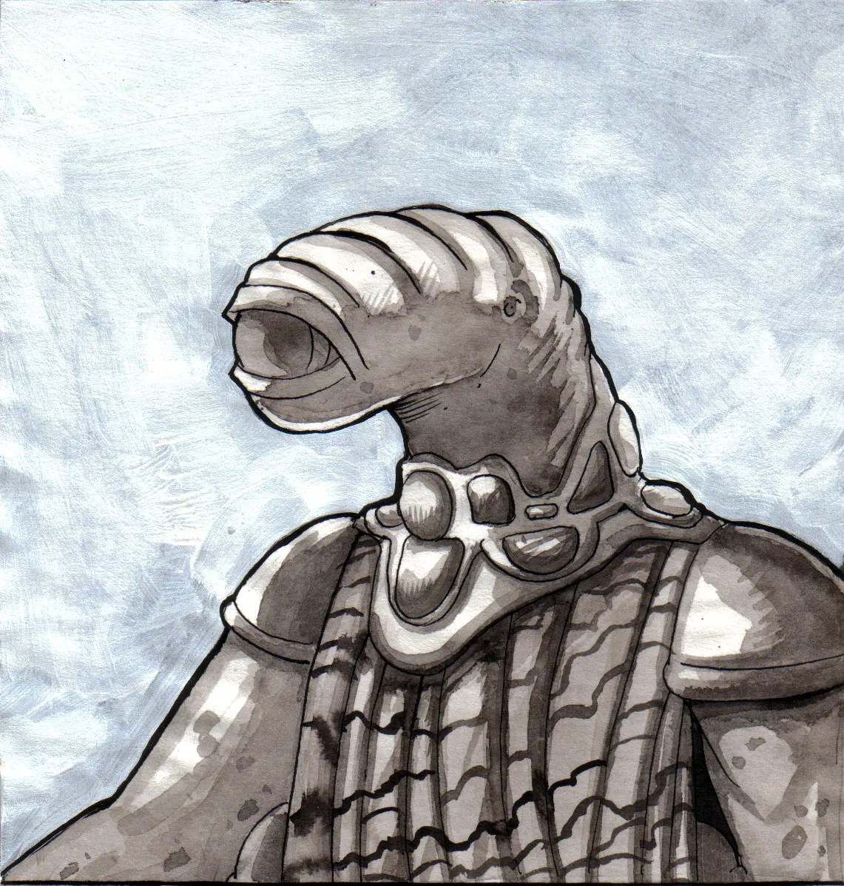
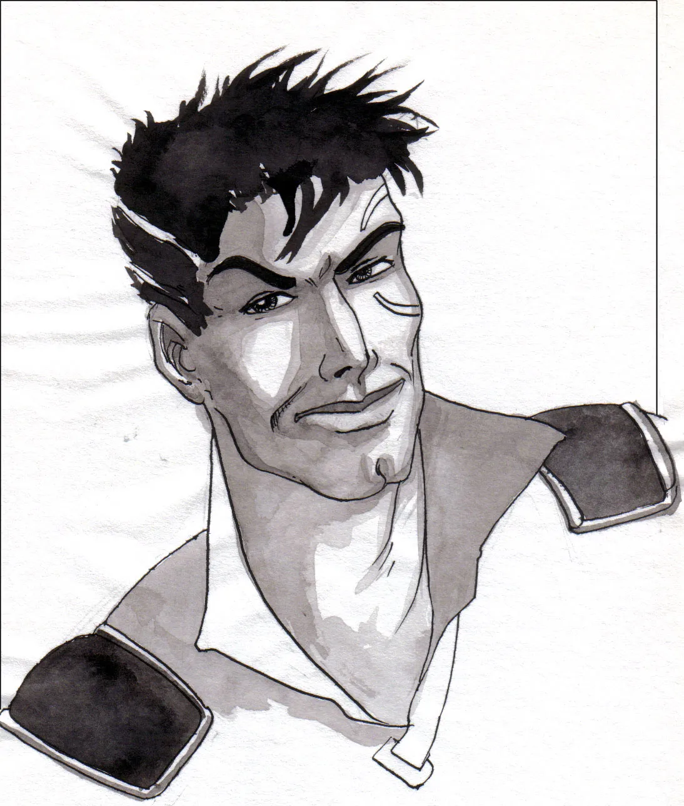
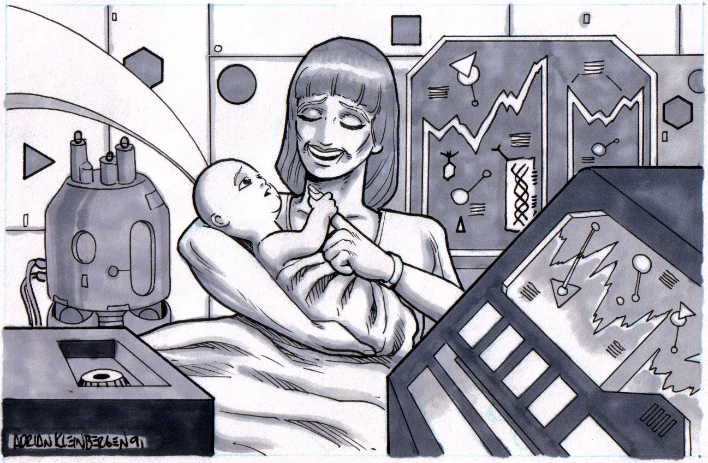
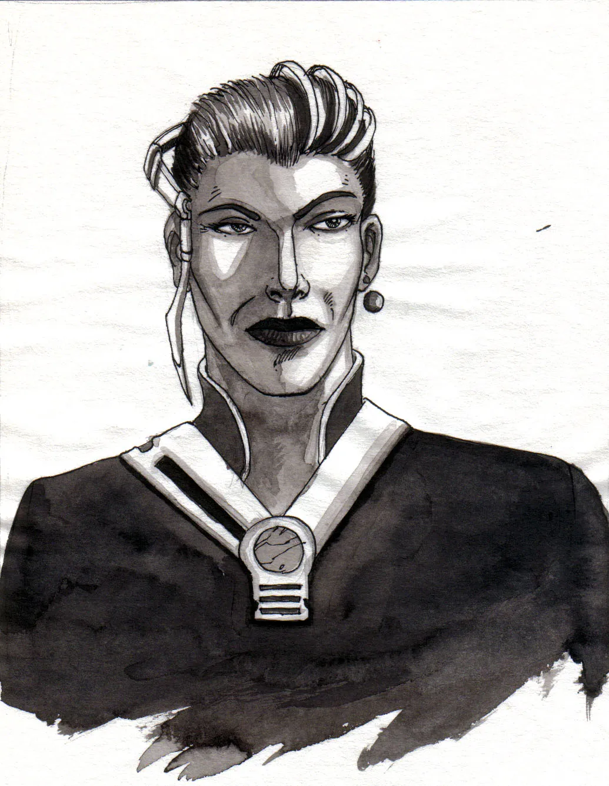
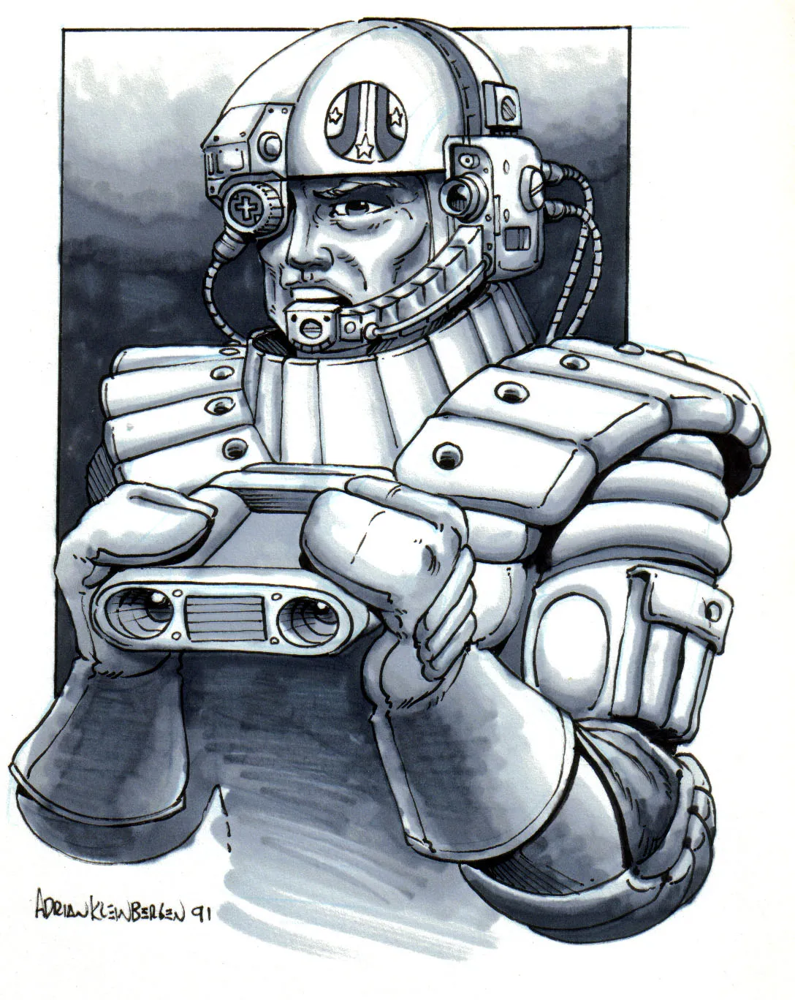

Prelude
In the year 2186 of the common era, the human world government, with the help of the Eebek Great House Meop, established the PolySolar Foundation (PSF). The Foundation's objectives were set and enforce the laws of known space, later to be recognized as the First Sphere. To accomplish this, a summit meeting of the leaders of Earth, Luna and Awmonee occurred on the Eebek homeworld. The conference was held on Awmonee because the Eebek were more inclined towards the establishment of an open assembly, representing the entire sphere, then the general populace of Earth or Luna. Earth and Luna's population were still skittish at the thought of a large government body, having just extracted themselves from the oppression of the Corporate era. At the meeting, the leaders along with their diplomats, worked out the first pre-PSF five year plan. The basic mandates of the plan covered seven major points:
- The use of Corporate era technology to set up a fully representative government on Earth.
- The establishment of a stellar law by which all trade and racial interaction would be regulated, and the bodies of power needed to regulate this law, including:
- An interstellar body of judges to adjudicate all stellar matters of law,
- A policing body to enforce the ruling of the court.
- The use of all Corporate Era knowledge to repair the damage done by that same Era.
- The establishment of a society for the research and protection of social, technological, and natural phenomenon found in known space.
- The establishment of a house of diplomatic envoys to:
- represent the interests of member planetali-ties of the PSF,
- set and reset the laws by which PSF space is ruled,
- act as a unified front to the violation of the freedoms of any PSF member's sphere on influence
- The establishment of a body of civil servants to oversee the daily operation of the PSF.
- The establishment of the office of the Secretariat to:
- oversee the day to day operations of the PSF,
- act as an unbiased PSF voting member with full membership rights and privileges,
- serve at this post for a period of 6 terran years, with:
- office being given by a unanimous vote of the PSF membership,
- office being revoked by a majority vote of the PSF membership.
This Five-Year plan later came to be known as the Pueblo Blueprint, named for the first Secretariat, Kao Pueblo; one of the first Eebek to mature fully within a human society. During his posting which lasted four years past the end of his normal term, Pueblo saw the establishment of the CCOP and MASS security forces, the building of both a judicial system of law for the PSF sphere and the small circuit courts within which; they operate, the increase of PSF membership from three (Earth, Luna, Awmonee) to nine (Earth, Luna, Awi aon-ee, Gateway, Carioden, Carakuss, Mars, Rilan, and Awmonor), and finally, the construction of two Polysolar Summit houses upon the homeworlds of the two founding races, Human and Eebek. With the end of Pueblo's term came the true beginning of the PolySolar Foundation.
The year 2197 found the PSF newly hatched from the minds of her creators and learning the extent of her powers. Every year saw new petitions from daughter worlds, space colonies and space stations for membership. The ranks of the observing members list, a list of colonies or stations who had petitioned and were undergoing a term of trial, grew well beyond the number of actual members.
By PSF rules, each petitioning member had to have the support of over half of their existing population. So long as this support was not forced, membership would be considered. The trial period for observing members is five years, the course of which they are allowed to speak at the PSF meetings, but not allowed to vote. During this trial period they must allow full access to their populace by (CCOP or MASS) investigators. Membership is them gained through a vote by the existing PSF members, with a seventy percent majority required for the success of the petitioner. The granted member must then agree to uphold all present PSF Statutes and Regulations, guaranteeing both the integrity of individual members' spheres of influence and the body of space represented by the PSF itself.

Portrait - Kão PuebloThe First Sphere cam into focus as an alliance of planetalites centered around a single hub of diplomatic rule, the PSF; a single body of space ruled by its individual population bodies through a representative house of diplomacy. Each race or population center was now fully represented within a house designed to address the individual and group concerns on the population of the First Sphere. No longer could any race or government rule the whole of the know space to the exclusion or detriment of any other race or government. Along with diplomatic and enforcement offices upon several other daughter worlds, colonies, stations and outposts, the two PSF great houses spent most of the years between 2189 and 2197 establishing its sphere of influence. Pueblo left office with several wings of the PSF firmly established. This included the Judicial circuit houses, the visible and invisible police forces, the system of shipping, transportation, and trade, the universal school of education, and the society for the discovery, research, and preservation of scientific phenomenon.
The final wing of government included an extensive fleet of exploration vessels, designed to interact with new, sentient races found in or around the First Sphere. This wing was called the Contact society. It was through this elite fleet of contact vessels the news of a second, large parcel of governed space was brought to the PSF. This second sphere, as it governed space was brought to the PSF. This second sphere, as it came to be known embodied the declared territory of the Mahedoshi and Aracnian governments, along with other races living within this envelope. The astounding find of a sister system of races and solar bodies brought the PSF to a state of high tension and intrigue. No one knew if this society was going to be friendly or not. For all indications, the Second Sphere was a much older advanced system of government, involving twice to times the number of races as was found with the PSF space. This Second Sphere, having been established for a much greater period of time than the PSF was assumed to much more organized in the event of war than the PSF could ever be. Through the intervention of the PSF Diplomatic core and the cooler heads at the great houses, disaster, as envisioned by some of the returning contact ships, was avoided.
2214 opened a vastly different universe. There were now two independent societies, the First and Second Spheres, testing out each others' readiness to interact. In order to talk to, study and report upon the Second Sphere, the membership found it necessary to develop a wing of elite special forces to work with the Second Sphere alone. Thus, under the influence of the current Secretariat, Lu-cian Anders, the 42nd Squad was formed. Taking many of the first contact members for special duty within the Second Sphere and training to the utmost of diplomatic, CCOP and contact disciplines, the Squad was formed.Operating under the guise of a diplomatic force, the 42nd Squad worked with and around Second Sphere officials to gain an intimate knowledge of its workings. Their exploits captured the minds of most First Sphere youth. The most famous of all the Squad, Jacky Vaughan, inspired a huge cultural revolution whose effects can still be felt today. The scruffy rebel attitude and outlook of he, his crew and their battered special forces cruiser, the Beatnik, came to adorn the walls of every hip kid this side of Okaha 5.

Portrait - RikkyJackFor your Rikky Jacky or Vaughan Pendelton posters - debit 37 Đ, each to:
Bank: Carakuss IX / Account: fe80::1ef:fe33:4587:910a

Portrait - Vaughn PendeltonThe meeting of the Second Sphere was not a fully peaceful one and several acts of violence from spheres had to be suppressed by the membership of the PSF on the confrontation with the Second, as would be demanded by the general populace if the full scale of violence was revealed. It was for these reasons that the Mahen-doshi, and several other Second Sphere races, were granted only observing member status within the PSF hierarchy, allowing the full members to exclude these representatives from any meeting that they felt fit to restrict access at. The existence of the PSF secret corps was withheld, it not fully then partially screened, from the Second Sphere races. Thus, through there was interaction between the two systems, both were still unsure about the others intentions or aspirations.
A great breakthrough emerged with the introduction of delta-warp in to Second Sphere technology in exchange for the anti-gravity technology that they possessed. Though neither fully understands the workings of the others technology, the mere fact that each trusted the other enough to release vital technological information was a great step towards the reaching of a peaceful state of cooperation. May other breakthroughs in both organic and mechanical engineering also occurred with the study of each others scientific technologies.
By 2233, the two spheres had established a calm state of interaction and tensions subsided. The PSF could not fully relax, however, for there soon would be a second unseen enemy with which it would have to deal. Several peripheral colonies had been attacked and the resident population completely wiped out, with little damage being done to the infrastructures of the colonies themselves. There was no evidence of any struggle and all that was found was a bloody, mass of knawed bones. The PSF, upon learning of this new threat, immediately mobilized every available PSF wing to the task of arming and defending the Sphere should it come under attack again. Emergency sessions of the PSF membership were called to deal with the logistics of war. Just four years after the first attack, 2239, we find the PSF in a state of relaxed tension.

Portrait - Vaughn PendletonPoly Solar Foundation
Essentially established as a crutch for the human race after the fall of the Corporate State it performed its function excellently. Within five years the system of representational democracy was out weighed by the powerful influences of many city representatives. These members of the PSF, elected by direct democratic means, were proponents of the global implementation of a direct system. Heavy opposition was encountered however, primarily because it would make them meer figure heads of state but sheer pressure won out and the existing direct democratic units were all linked to a network of computers that tallied all the ballots and reported the results. This allowed the average citizen to cast a vote on any issue. The representatives still remained but were now appointed for no fixed term they were simply called back if they weren't living up to standards. The resulting system grew and prospered on Earth but her colonies did not share the same good fortune.
PSF Departments:
ITAG
This organization can be equated to the judicial branch of government. It contains the police and military forces and runs the circuit courts. Two major sub-sections of ITAG are MASS, Military Aero-Space Security, and the MFC, the Marine Federation Corps. These two forces handle the enforcement of Federation rule in all of know space. MASS has control over space related duties, while the MFC handle operations on planets.
IGAL
This wing of the Foundation is responsible for the education and training of all people living within PSF jurisdiction. Each PSF member world has 'schools' regulated by IGAL standards. There are also two buildings, on Earth and Awmonee, for students who come from planets without schools. These also serve centers for some of the highest schooling available in the First Sphere. There are however, several local universities which are devoted to the study of one or two particular fields, and are the top educational schools for their disciplines. All schools are devoted to teaching all levels of knowledge, from pre-school to Doctoral studies. All First Sphere inhabitants receive schooling to their fourth year of university. IGAL stands firmly behind this standard.
CSEP
This organization is the body that evaluates, studies, and regulates the interactions between Foundation and worlds which have not yet been 'contacted' by the PSF. The most important of these worlds are homeworlds like Fabi and Carioden. Also included under their scrutiny are all worlds seeking a addmission to the PSF. CSEP evaluates each based on socio-economic-political level. This evaluation is researched through in situ studies of the planet and its population for as many as five years, often before trade is allowed. After this detailed analysis, quotas are set on various goods that can be traded and traders assigned. Enforcement of CSEP's decisions is handled by the Council for Clandestine Operations on Planets to monitor the flow of technology. CCOP operatives ensure no unauthorized trade occurs.
CSEP
also acts as the diplomatic arm of the PSF. It negotiates treaties and alliances with technologically advanced societies who are space faring, but not yet part of the PSF. CSEP is directly controlled by the majority vote of the PSF membership, as with all divisions of the PSF.
IGTA
The major body for trade in the foundation, this organization helps to bring the buyer and seller of products together. IGTA provides all manner of assistance to members and observers of the PSF including the sale of it's products. These services include finding markets for the product, determining a fair market value, assistance in the sale, organizing transportation, aisistance with documentation and licensing, insurance of payment for the seller, and delivery for the buyer - for a small fee. This fee is charged for all transactions that go through IGTA, regardless of the amount of assistance provided, and is usually 10% of the sale value. The vast majority of trade that passes through this organization is between smaller colonies to/from other colonies and colonies to/from the homeworlds. The larger worlds prefer to organize the trade that takes place between them, themselves. In this instance, IGTA still sets a fair market value and requires a small fee, 1 or 2%.IGTA acts on behalf of the smaller colonies to find buyers for the products, it searches the requests for products and matches buyer and seller. IGTA sets a fair market price for the product and ensures that all transactions are without political, social, or economic bias. This ensures that all parties are treated fairly and that the lines of trade are open and free among all members of the Alliance. IGTA also arranges that transportation of goods with the major carriers. Once a year the PSF chooses a number of traders who will act as shippers for them. These traders deliver the goods between the worlds. This is done to ensure that essential goods reach every part of the foundation and at a reasonable price, not subject to the whimsey of unscrupulous traders.
IGEF
The Inter-Galactic Expeditionary Force has control over the exploratory work which is undertaken by the Foundation. The force is committed to the exploration, research and protection of galactic phenomenon found within the universe. IGEF is also empowered by the Foundation to explore in more detail the worlds over looked by the expansion of the Corporate era, who with un-manned probes and a few long range scans surveyed only those planets that served their voracious appetite for minerals. IGEF maintains a fleet of forty well built vessels. It also has two large science complexes on Awmon-ee and Earth, as well as several small observing stations positioned around the First Sphere. A museum devoted to the findings of IGEF can be found on MARS. IGEF is also the parent body of the Contact Squad. The Squad is operated jointly by IGEF and CSEP to study the Second Sphere. Their members run the full length of the spectrum, from the fully respected to the thoroughly un-respectable. All types of races and personalities can be found working for the Squad. But, those who do work within it are the best in their fields, no matter what.
Politics and Militaries
By far the most outstanding feature of the current political establishment is its youth, growth, and flexibility. These features, not usual characteristics of stable governmental systems, pervade the current political scene. All of which can be attributed to the inclusion of Humans in the Poly Solar Foundation in 2186.

Other Non-Governmental Organizations (NGOs)
| Acronym | Name | Founded |
|---|---|---|
| PSF | PolySolar Foundation | 2156 |
| ASP | Aerospace Security Patrol | 2146 |
| USMC | American Marine Corps, 2nd Brigade | -- |
| Araen Green Fusiliers | 2217 | |
| BVs | The Bastard Vagrants | 2225 |
| Capellan Light Wing Militia | 2178 | |
| Hell's Angels | 1947 ? | |
| LDF | Lunar Defence Force | 2081 |
| New Kilmarnock Highlanders | 2183 | |
| Oberhausen Hussars | 2174 | |
| PSMF | PolySolar Military Federation | 2146 |
| INF | Intergalactic Naval Federation, 4th Fleet | 2146 |
| ITAG | Intergalactic Treaty and Alliance Garrisons | 2153 |
| MARS | Mercenary Administration and Regulatory Service | 2122 |
| MASS | Military AeroSpace Security | 2146 |
| MFC | Marine Federation Corps, 1st Brigade | 2146 |
| CCOP | Council for Clandestine Operations on Planets | 2158 |
| IGAL | InterGalactic Academy of Learning | 2189 |
| ORF | Omega Research Foundation | 22-- |
| Navtech | 22-- | |
| PWNA | Port Waterston Naval Academy | 2176 |
| BC6 | PSMF Battle College at Griddansk | 2231 |
| SAGE | Saint Rawlins Academy for Galactic Exploration | 2134 |
| Thoth University | 2166 | |
| Acad Terra | 21-- | |
| Ch'chien Wa Bow Courier Service | 1769 | |
| Ch'chien Wa Bow Traders Guild | 2068 | |
| DAWT | Deshong Advanced Weapons Technologies | 2208 |
| GFT | Galactic Financial Trust | 2172 |
| ITC | Interstellar Trade Commission | 2125 |
| GT | Galm Transport | 22-- |
| IHMC | IronHide Mining Corporation | 22-- |
| Jjaro Mercantiles | 2185 | |
| Jjaro Traders Guild | 2201 | |
| OTI | Otaga Transport Incorporated | 21-- |
| PSI | Pandarin Subsystems Incorporated | 2229 |
| SAKI | Shuuj and Kebline Industries | 2206 |
| Stevin Shipping | 2172 | |
| Stevin Traders Guild | 2172 | |
| TWT | Transac Warp Technologies | 2199 |
| Chock Pirate Faction | 21-- | |
| Gannal Pirate Faction | 22-- | |
| Marikann Pirate Faction | 21-- |